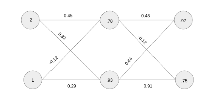
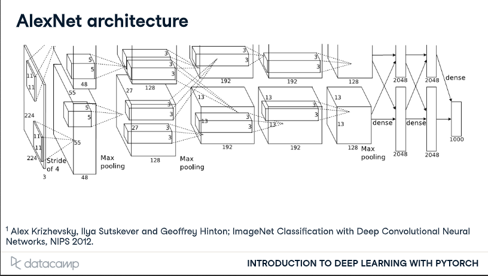
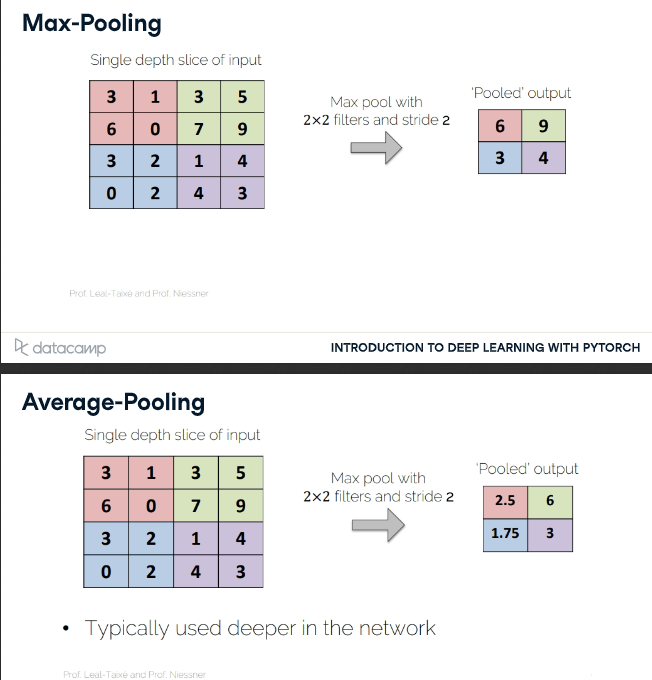
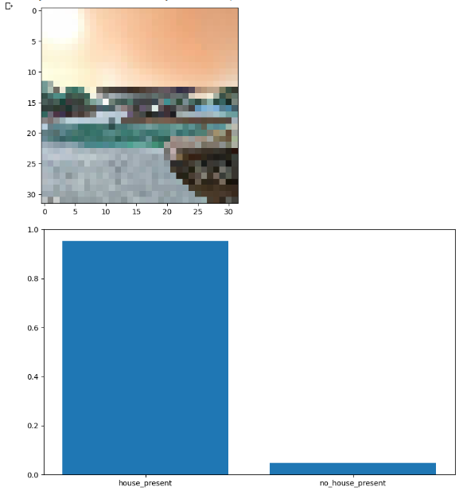
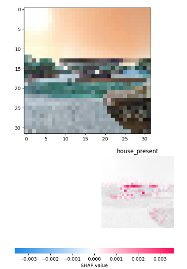
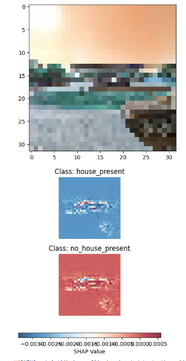
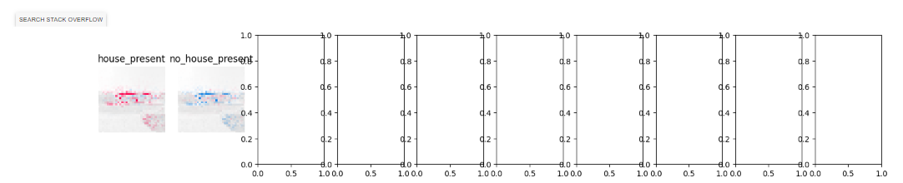
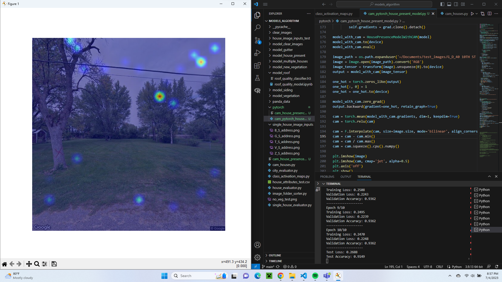

CAM, SHAP, and Learning About AI Architecture
During this long weekend I learned more about AI models and toyed around with the heat maps I wanted to get done. The SHAP method mostly works and the CAM method prints but does not work quite yet and I will show both of these below.
First I finished a course in DataCamp labeled Deep Learning with PyTorch. This course gave me a lot more insight on how to build layers of Neural Networks and gave some cool graphics I wanted to display after my ramble.
I learned about some of the math behind machine learning such as matrix multiplication, derivatives, and how weights are set to each connection of the network.




Next I made an AI model that prints SHAP images from it’s prediction. I used the gutter model first then made another for house present. Currently the image is fed to the AI too blurry for it to see the gutter so I need to go back and give the AI a more detailed image to evaluate but in the meantime I made another model for the house present data.
These models use keras and sklearn to build the network just as our previous models and then uses the shap library to create images that show basically what the AI is using to make it’s prediction. These models were also made in Google Colab.




As you can see I tried to display the data a few different way’s and they definitely need to be tweaked. The last three images are the SHAP images, my favorite is the last one. It is showing all of those empty graphs for some reason but the actual images shown is what we want. It shows which pixels the model is looking at to make each determination. You may notice the two images are basically the same but this makes sense because if the model determines one line of pixels shows a house is probably present the model will use the same pixels to determine that the no house present category is false.
Finally I tried to apply what I learned about PyTorch to make a CAM model. I made this model in a Py file just to see the difference of running in Google Colab. This model uses torch, torchvision, and sklearn.


I got the image to display but as you can see for an example of a house present and no house present the heat map is exactly the same which probably means it is not tracking the neural network properly.
I think this all is a good step forward and hopefully was enough to finish this by our presentation next week.
Also it’s Independence Day, God Bless the USA